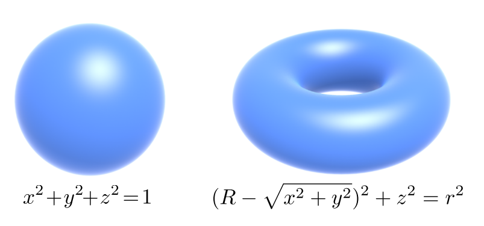
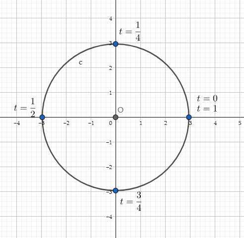
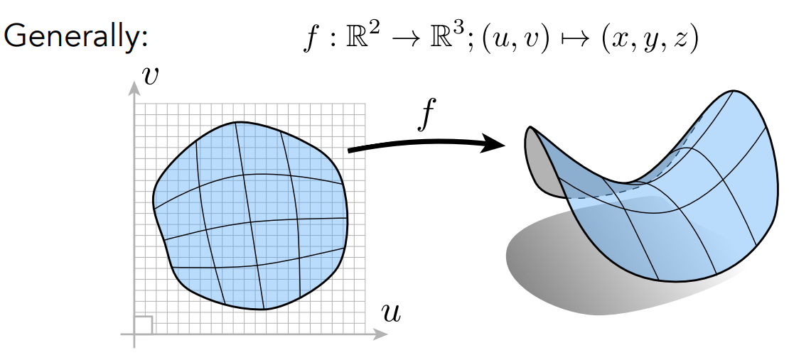
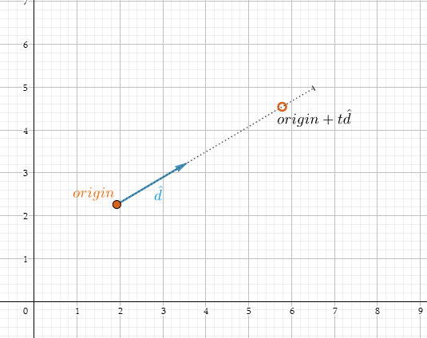
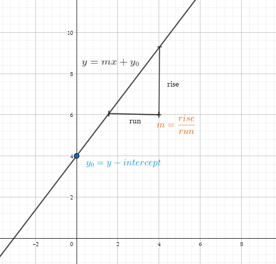
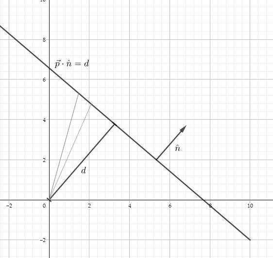
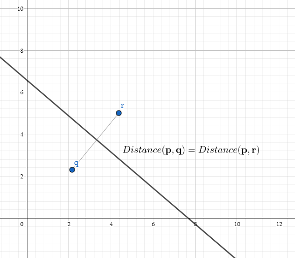

图形学的数学基础（八）：几何图元-直线和光线
几何图元-直线和光线
几何表述
在计算机图形学中，描述几何形状的主要策略有两大类：隐式几何和显示几何。
隐式几何（$implicit\ Geometry$）
通过隐函数的方式描述一个对象,一般采用$f(x,y,z) = 0$的定义方式，告诉了我们$x,y,z$需要满足的关系。例如对于三维空间以原点为圆心的单位球可以这表示：
$x^2+y^2+z^2 = 1$
隐函数形式可以方便的通过将点带入函数，判断点是否在几何表面上，之内或之外。但是隐函数无法直观的告诉有哪些点是满足这种关系的。

隐式几何代表：
- 代数方法
- CSG
- distance Function
- level Set Methods
- Fractals
显示几何（$explicit\ Geometry$）
描述几何的另外一种方式是参数方程。同样地，几何仍由函数定义，但这一次$x,y,z$不是作为输入，而是作为输出。我们以二维平面的单位圆为例：
$x(t) = \cos2\pi{t}$
$y(t) = \sin2\pi{t}$
当t从0变为1时，点$(x(t),y(t))$将显示要描述的形状的轮廓:

另外一个例子，uv坐标映射为三维空间的$x,y,z$：

通常情况下，参数会被归一化为$[0,1]$之间。
显式几何正好和隐式几何相反，它可以直观的告诉空间中的哪些点满足要求，但是对于空间中的一个点，它不好判定点是否在几何表面。
光线（$Ray$）
从现在开始将逐步展开介绍特定的几何图元。首先从最基本也是最重要的一个开始，线（$Linear Segment$），有三种基本类型的线，分别为：
- 直线：可以在两个方向上无限延伸
- 线段：具有两个端点的直线的有限部分
- 光线：具有原点并在一个方向上无限延申
光线定义
光线有两个属性，分别为起点和方向,那么在任意时间t（$0 <= t <\infin$）,光线到达的位置由以下方程定义：
$\textbf{Ray}(t) = \textbf{origin} + t\textbf{d}\;\;\;\;(0 <= t <\infin)$

尽管向量格式更紧凑，并且具有很好的属性，但是也可以为每个坐标写出一个单独的标量函数：
$x(t) = origin_x + td_x$
$y(t) = origin_y + td_y$
$z(t) = origin_z + td_z$
直线
直线虽然简单，却有好几种不同的定义方式，这些定义分别会从从不同的角度去理解。
斜截式（$Slope-Intercept$）
斜截式是一种在二维中表达直线的形式，符号$m$表示竖直高度与水平高度的比率（斜率），$y_0$表示y轴截距，是直线与y轴交叉的位置。
$y = mx + y_0$

注：垂直线有无限斜率（$x = n$），无法用$y = mx + y_0$的方式表达，可以通过以下略有不同的隐函数解决这个奇点问题：
$ax + by = d$
点乘法
$ax + by = d$可以看作$点p\begin{bmatrix}
x\\ y\\
\end{bmatrix}$和向量$n\begin{bmatrix}
a\\ b\\
\end{bmatrix}$的点积，即：
$\textbf{p}\cdot\textbf{n} = d$
根据向量点积的定义，$\textbf{p}\cdot\textbf{n}$等于$\textbf{p}$在$\textbf{n}$上投影的长度：

向量$\hat{n}$是与直线垂直的的单位向量。d是从原点到直线的有符号垂直距离。任何投影到$\hat{n}$的长度等于$d$的点都满足直线方程。这里之所以采用有符号距离，意思是如果直线位于和法线点相同的原点的一侧，则$d$为正，随着$d$的增加，直线将沿着$\hat{n}$的方向移动。
垂直平分线（$Perpendicular\;Bisector$）
定义直线的最后一种方式是作为两点的垂直平分线：
